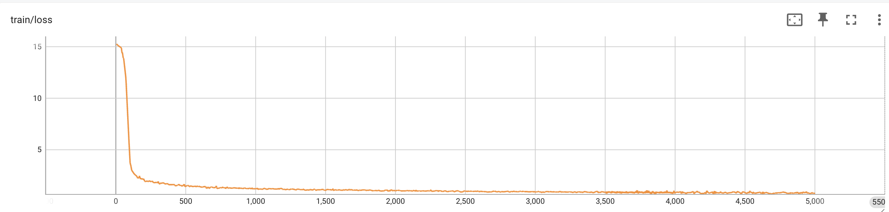
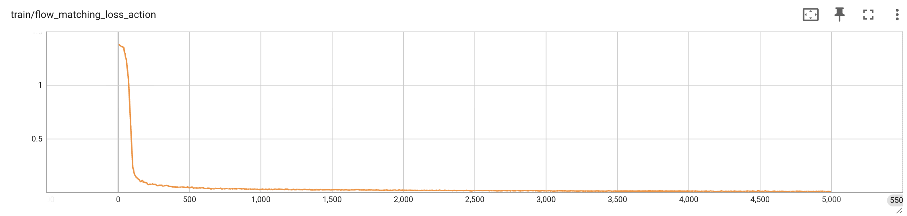
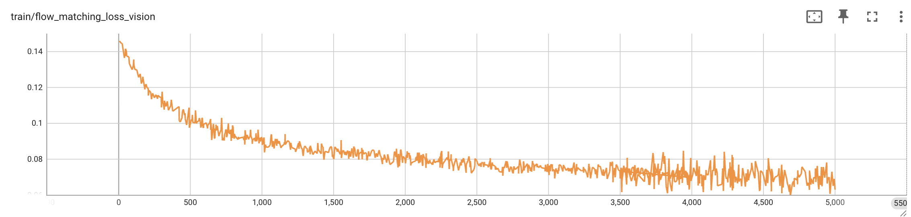
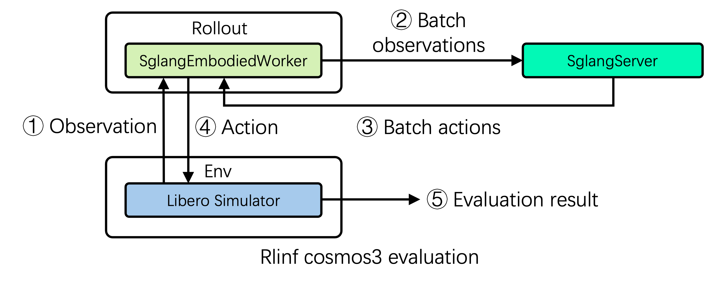

随着具身智能模型不断演进，模型本身只是完整开发流水线的一部分。对于一个新的世界动作模型（World Action Model，WAM），从模型接入、训练、推理到基于仿真的评测，都需要能够快速适配且高效运行的基础设施。
RLinf 此前已经支持 DreamZero 等世界模型。现在，我们进一步集成了 NVIDIA Cosmos 3，并以 SGLang-Diffusion（下文简称“SGLang”）作为推理后端，把监督微调（SFT）、推理服务和基于仿真的评测统一为一条端到端流水线。RLinf 上的 Cosmos3-Nano SFT 训练精度与官方实现一致；经过增强的 SGLang 多批次推理与流水线并行评测，则把评测吞吐量提升到直接接入 SGLang 方案的 3.33 倍。
本文以 Cosmos3-Nano 集成为案例，介绍从微调到高吞吐并行评测这条端到端路径中的关键设计决策，以及 RLinf 如何通过流水线调度进一步提高评测效率。
01 Cosmos3：RLinf 具身智能技术栈的一次升级
Cosmos3 是 NVIDIA 的全模态模型，能够原生理解和生成文本、图像、视频、环境音频与动作。它的目标是提供统一的多模态能力，用于建模物理世界并生成动作。
在架构上，Cosmos 3 采用混合 Transformer（Mixture-of-Transformers，MoT）双塔设计，由一个自回归 Transformer 和一个扩散 Transformer 组成：
- 自回归 Transformer 负责多模态理解与推理。
- 扩散 Transformer 负责多模态内容生成。
两座塔共享统一的注意力层和 3D mRoPE（3D 多模态旋转位置编码）位置表示，使模型能够跨模态建立共享的时空表示，并对跨模态边界的时空结构进行建模。

来源：Cosmos3 技术报告，https://arxiv.org/pdf/2606.02800。
Cosmos 3 提供 Edge、Nano 和 Super 三种规模。下文所有训练与评测均使用 Cosmos3-Nano。
Cosmos3-Nano 是一个 160 亿参数的 MoT 模型，其核心沿用 Qwen3-VL-8B 架构：36 层 Transformer、4096 隐藏维度、32 个注意力头和 8 个 KV 头。
Cosmos3-Nano 并非完全从零训练。自回归 Transformer 直接复用 Qwen3-VL-8B 的预训练权重；扩散 Transformer 同样以 Qwen3-VL-8B 权重初始化，然后在 Cosmos3 训练期间继续优化。
目前 RLinf 中 Cosmos3 的技术配置如下：
- SFT 训练运行在 RLinf 现有的 FSDP2 训练后端上。
- 评测使用 SGLang 作为推理后端。
Cosmos3 是一个相当复杂的新型多模态动作模型，把它接入现有具身智能训练框架，本身就是一项有代表性的工程实践。选择这样的模型意味着 RLinf 要支持的不是一次常规推理任务，而是一条横跨多模态理解、动作生成和仿真评测的完整具身智能工作流。
02 模型 SFT：在 RLinf 现有框架上轻量接入
1. 基于适配器的轻量接入：解耦模型实现与训练框架
Cosmos3 是 OmniMoT 模型，其架构已在 NVIDIA cosmos-framework 中开源。对于已有完整官方实现的新模型，最大的集成成本并不是“让它跑起来”，而是如何将其接入现有训练框架，同时避免维护第二份模型实现。
集成期间，RLinf 没有重写 Cosmos3 模型架构，而是把 Cosmos3 视为外部 Hugging Face 模型，通过一层适配器接入。
模型构建和初始化仍由 Cosmos 自己的配置系统负责；RLinf 只在模型外部增加一层薄封装，把 Cosmos3 的接口映射到 RLinf 的接口。
Cosmos3 SFT 运行在 RLinf 现有的 FSDP2 训练后端上，因此不需要为 Cosmos3 新建专用训练循环。检查点保存与加载、日志和监控全部复用 RLinf 的现有机制。
这种设计的核心价值在于：尽可能完整地复用官方 Cosmos3 实现，而无需在 RLinf 中重写并维护一份独立的 Cosmos3 模型代码。
以这种方式解耦模型适配与训练框架，也为未来模型提供了一条更清晰、成本更低的集成路径：新模型可以复用现有训练栈，而不需要改动 RLinf 的训练后端。
2. 在 RLinf 上进行 Cosmos3-Nano SFT，训练精度与官方实现一致
我们使用 NVIDIA 开源的 LIBERO_LeRobot_v3 数据集，其中包含机器人操作任务的多模态轨迹数据：主相机和腕部相机拍摄的 RGB 图像、机器人状态（8 维），以及对应的机器人动作（7 维）。动作表示为三维平移、三维轴角旋转与夹爪状态。
加载 LIBERO_LeRobot_v3 后，Cosmos3 会在数据处理过程中动态转换并归一化动作表示。原始三维轴角观测被转换为六维旋转表示（Rot6D），原始七维动作被转换为十维动作表示，随后使用基于分位数的方式进行归一化。
与轴角表示相比，Rot6D 避免了 ±π 附近的不连续，使动作空间具有更平滑、连续的表示。这有助于扩散模型更稳定地学习动作分布，并生成质量更高的机器人动作。
请注意：当前 SFT 实验使用 NVIDIA 官方 LIBERO_LeRobot_v3 数据集，其视频以 10 FPS 录制。如果改用其他 LIBERO 数据集或自行重建数据集，需要特别检查帧率和相关超参数是否仍与当前 Cosmos3 配置匹配。
下图给出了在 RLinf 上对 Cosmos3 进行 5,000 次 SFT 迭代的结果，训练表现与 Cosmos3 官方实现一致。

图 1：Cosmos3-Nano 在 LIBERO_LeRobot_v3 上进行 5,000 次 SFT 迭代时的总体训练损失。

图 2：Cosmos3-Nano SFT 期间的动作流匹配损失。

图 3：Cosmos3-Nano SFT 期间的视觉流匹配损失。
在 LIBERO_LeRobot_v3 上完成 5,000 次 SFT 迭代后，Cosmos3-Nano 的总体训练损失稳定收敛。综合来看，这些结果表明 RLinf 中的 Cosmos3-Nano 集成能够有效学习 LIBERO 数据中的视觉和动作分布，整个训练过程保持稳定。
03 评测：解耦调度与流水线执行
在 LIBERO_LeRobot_v3 上完成 Cosmos3-Nano 微调之后，下一步是在仿真环境中评测训练后的模型，验证它实际生成机器人动作的效果。
1. 解耦任务调度与推理调度：让 RLinf 和 SGLang 各司其职
目前，RLinf 支持将 SGLang 作为 Cosmos3 评测的推理后端。SGLang 以独立推理服务运行，负责模型推理和并发请求处理；在 RLinf 一侧，每个计算组件由一个 Worker 管理，Worker 负责组件的生命周期及其与其他组件之间的数据交换。
这里有一个关键设计决策：RLinf 不接管 SGLang 内部的推理调度。
SGLang 已经具备成熟的推理优化、自有 Router 和请求调度。如果 RLinf 在上层再施加额外的生命周期管理或调度，可能会干扰 SGLang 自身的调度，反而降低推理性能。
因此，RLinf 采用非侵入式 SGLang Worker 架构：
- RLinf：负责任务编排与数据流。
- SGLang：负责推理及其内部调度。
SGLang Worker 在初始化阶段启动 SGLang 推理进程。此后，它的主要职责是在 RLinf 与 SGLang 之间进行数据适配和请求转发，不参与 SGLang 内部的模型推理与请求调度。
当其他 Worker 发出推理请求时，SGLang Worker 首先把输入转换为 SGLang 所需格式，将其直接发送到 SGLang 服务，然后等待推理任务完成。推理结束后，SGLang Worker 取回模型输出，转换回原有格式，再把结果传递给下一个 Worker。整个过程中，RLinf 都不会干预 SGLang 内部的模型推理、请求调度或 Router 机制。
这样便实现了 RLinf 任务调度与 SGLang 推理调度的解耦：RLinf 控制整体任务流，SGLang 负责自身推理效率。两个系统可以清晰集成，同时完整保留 SGLang 现有的推理优化。
2. 重叠 CPU 仿真与 GPU 推理，提高硬件利用率和评测吞吐量
仿真和推理属于同一条任务链，但消耗的计算资源不同。在 Cosmos3 的 LIBERO 评测中，各个 Worker 的计算特征高度异构：LIBERO 模拟器主要在 CPU 上运行环境仿真，SGLang 则在 GPU 上进行模型推理。如果严格串行执行两个阶段，仿真与推理之间会出现明显的空闲间隔，CPU 和 GPU 都无法被充分利用。
因此，问题从“模型能否运行”转变为：
如何让不同的计算阶段真正并行工作？
RLinf 的答案是在评测流程中引入流水线执行机制。面对一批评测任务时，RLinf 将任务拆分为多个批次并分配到多条流水线，使不同批次在各 Worker 之间交错执行，从而尽可能重叠 LIBERO 仿真与 SGLang 推理。
以 LIBERO-10 为例，在一台 8 GPU 服务器上进行一次完整评测，需要覆盖 10 个任务 × 50 个演示，共 500 个 episode。
RLinf 启动 128 个并行仿真环境，每个环境负责 4 个仿真任务。当任务数无法被并行环境数整除时，系统通过任务填充维持固定的并行宽度。在当前配置中，128 个仿真环境平均分布到 8 张 GPU 上，即每张 GPU 16 个环境，因而可以并行运行仿真任务。在此基础上，RLinf 还能把 128 个并行环境进一步拆分为 N 条流水线，每条处理 128 // N 个环境。单条流水线内，任务依次经历 LIBERO 仿真 → SGLang 推理 → LIBERO 动作执行；不同流水线之间则以流水方式调度执行。
- LIBERO 模拟器首先并行运行环境并收集当前观测。
- RLinf 将多个环境的图像和其他观测组装成一个批次，发送给 SGLang。
- SGLang 利用多批次、高并发推理能力，同时处理大量请求并生成对应的下一步动作。
- RLinf 接收推理结果，把每个动作返回到相应的 LIBERO 环境执行；环境随后产生下一条观测，进入下一轮推理。
这一循环持续到所有 episode 完成评测。

整体评测过程变成并行 LIBERO 仿真、RLinf 流水线调度与高并发 SGLang 推理之间的流水线协作。CPU 上的环境仿真和 GPU 上的模型推理在时间上重叠，减少计算阶段之间的等待，同时提高硬件利用率与评测吞吐量。
3. 结果：吞吐量最高达到单批次基线的 3.33 倍
我们结合 RLinf 流水线调度与 SGLang 高并发推理，优化了当前 Cosmos3 仿真评测负载。端到端结果如下。
128 个 episode、32 个仿真环境
| 每个请求的观测数 | pipeline_stage_num |
相对吞吐量 |
|---|---|---|
| 1 | 4 | 1.00× |
| 2 | 2 | 1.66× |
| 4 | 1 | 1.80× |
完整 500 个 episode、128 个仿真环境
| 每个请求的观测数 | pipeline_stage_num |
相对吞吐量 |
|---|---|---|
| 1 | 16 | 1.00× |
| 2 | 8 | 1.70× |
| 4 | 4 | 2.67× |
| 8 | 2 | 3.33× |
| 16 | 1 | 2.33× |
第一列是每个请求发送给 SGLang 的观测数量，pipeline_stage_num 是任务被拆分成的流水线数量；二者乘积保持不变。结果表明，RLinf 流水线调度与 SGLang 高并发推理相结合，可以显著提高 Cosmos3 的仿真评测吞吐量；在完整 500 episode 评测中，吞吐量达到单批次基线的 3.33 倍。
04 RLinf × SGLang × Cosmos3：从“再支持一个模型”到“完整的端到端具身智能流水线”
集成 Cosmos3 从来不只是让 RLinf“再支持一个模型”。在这项工作中，RLinf 中的 Cosmos3 已经形成一条完整流水线，覆盖模型接入、SFT 训练、SGLang 推理与基于仿真的评测。它展示的并非对某个特定模型的支持，而是 RLinf 如何以轻量方式接入不断演进的具身智能模型，把训练、推理和评测整合为一条端到端流程，并通过系统级调度进一步提高整体效率。
对于具身智能而言，基础设施的价值同样不止于“让模型运行起来”。更重要的是把模型、训练、推理、仿真和任务执行组织为一个高效协同的系统——这也是 RLinf 持续建设具身智能与智能体基础设施的核心方向。
更多信息请访问 https://github.com/RLinf/RLinf，欢迎 Star、关注和反馈。
Cosmos3 SFT 文档：https://rlinf.readthedocs.io/en/latest/rst_source/examples/embodied/sft_cosmos3.html
Cosmos3 SGLang 评测文档：https://rlinf.readthedocs.io/en/latest/rst_source/evaluations/guides/cosmos3_sglang.html
RLinf 团队与 SGLang 团队